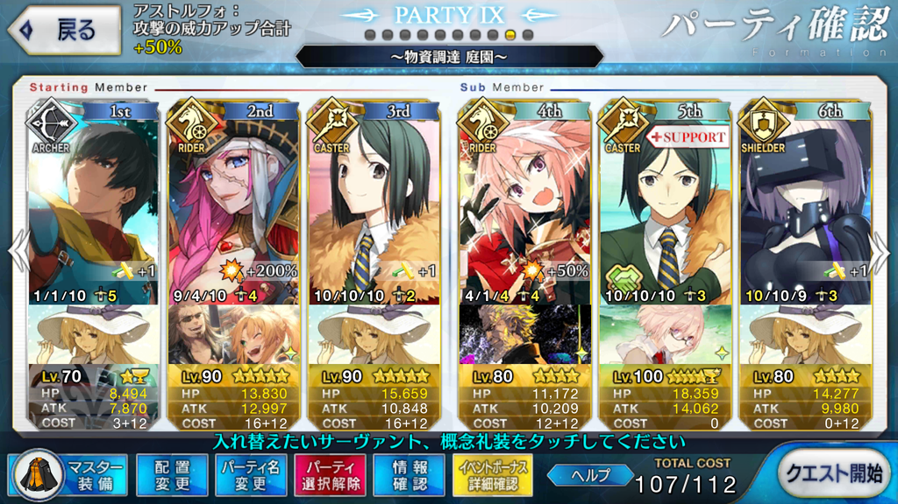

【FGO】Apocrypha/Inheritance of Glory 物資調達（庭園） 天級
目次
この記事ではFGOイベントの周回を扱います。
編成画像にて最終再臨絵のネタバレがあるのでご注意を
基本方針
- 3T周回する
- 可能な限りドロップ追加礼装を搭載する
ドロップアイテム
城塞の午後
フランの花
蛮神の心臓
禁断の頁
術の秘石
術の輝石
ドラクルコイン
賢者のチョーク
心臓を除いて、ドロップ率は恒常フリークエストや曜日クエストに劣る
心臓のドロップ率も特別良いかというとそうでもなさそうな感じがする
交換用のチョーク集めが終わっていない場合や、ドラクルコインが200万に達していない場合であれば回る価値はあるが、そうでなければわざわざ回る場所ではない
エネミー構成
- 本
- デーモン
火力特攻キャラ
- スパルタクス（+50％）
- フランケンシュタイン（狂）（+50％）
- アストルフォ（+50％）
- アキレウス（+100％）
ひとまず攻撃有利のサーヴァントのみ
今回配布のジークも+100％であるため、十分に育っていれば火力として活用できるか？
編成例

オダチェンなし
ドロップ礼装は自前で3
アーラシュの礼装は初期NP+30以上必須
軍師の忠言、軍師の指揮、弓矢作成で50、マスター礼装の霊子譲渡で20NPが獲得できる
1wの敵にしてはHPが高く、36000程度を削るにはアーラシュに攻撃バフを盛る必要がある
アーラシュの礼装を凸虚数辺りにするのであれば、マスター礼装は自由になる
今回はチョークのドロップ追加があり、初期NP40の彼方への巡礼を搭載している
2wは特攻持ちのアストルフォに任せる
特攻なしの場合、それなりのバフが必要な程度にはHPが高く、水着イシュタルは自前バフのみでは削りきれなかった
育っていればアキレウスでも代用可能と思われる
スパルタクスや狂フランでももしかしたら行けるかも？
凸カレスコをつけているが、アストルフォ/アキレウス/スパルタクスは自前でNPチャージできるので必須ではない
アストルフォは理性蒸発がLv10になっていれば初期NP50の相撲等でも良く、アキレウスとスパルタクスはスキルが育っていれば凸虚数でも良い
3wは安定のドレイク
凸トゥリファスにてを装備し、星の開拓者と孔明のスキルでNP100にする
周回用キャラ選別
アーラシュ/スパルタクス
いつもの
スパルタクスに関してはイベント特攻が乗っているため、構成次第では2wを任せられるかも
アストルフォ
最大でNPを50チャージできる星4全体宝具ライダー
怪力を乗せた宝具で2wをすっとばせる
理性蒸発がLv10であれば、ドレイクの代わりに3wを担当できそう
ドレイク
最大でNPを50チャージできる星5全体宝具ライダー
凸トゥリファスにてを装備しつつ、孔明と合わせてNPを100にできる
アキレウス
イベント特攻持ち、NPを最大30チャージできる全体宝具ライダー
その他全体宝具ライダー/バーサーカー
水着イシュタル
全体に3T持続するBQアップバフをかけられる全体宝具ライダー
NPリチャージは輝ける水の衣Lv9で21程度のため、孔明と合わせても全体宝具2連打はできない
フランケンシュタイン（狂）
イベント特攻持ち全体宝具バーサーカー
自前で宝具威力をアップするスキルを持つ